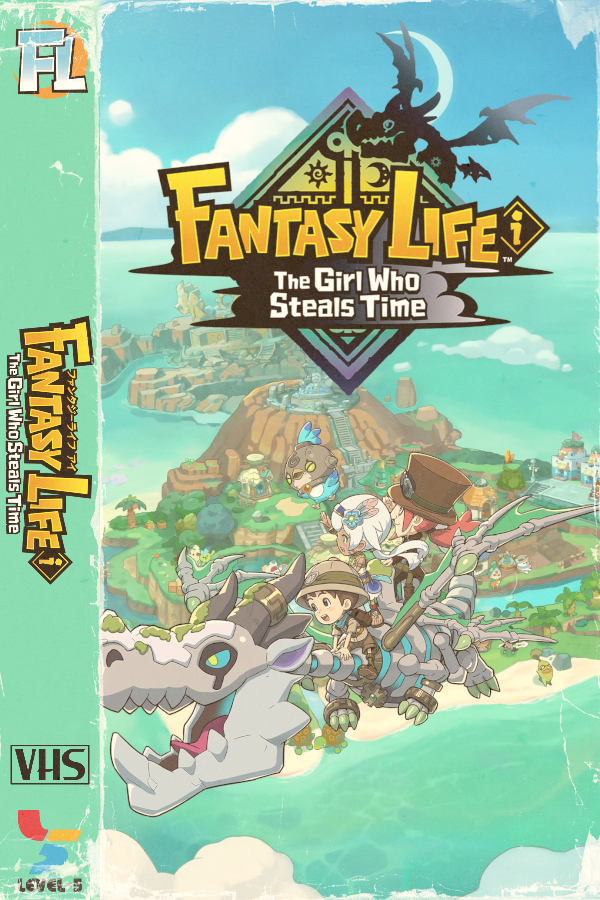

Game profile

Fantasy Life i: The Girl Who Steals Time
Every archived year-end list appearance, including placement and points earned.
About the Game
Begin a fantastic life on a ruined island, and embark on a great adventure into the past! Gather friends, craft, and build your own city! A completely new entry in the Fantasy Life series! Build your own city and go on adventures on a new island! Explore the island with whatever Life (occupation) suits you! Travel between the past and present to unravel the mysteries of this ruined island! Popular characters from the series make a return!
| Released | 2025-05-21 |
|---|---|
| Publisher | Nintendo, Level-5 |
| Genres | RPG, Simulation |
| Platforms | Xbox Series S/X, PlayStation 4, PC, PlayStation 5, Nintendo Switch |
Where to Buy
Game information provided by RAWG.
4List appearances
1Years represented
Points by Year
62025 points
List History
| Year | Source | List | Placement | Points |
|---|---|---|---|---|
| 2025 | FullCleared | FullCleared's Favorite Games of 2025 | 16 | 3 |
| 2025 | Geeky Brummie | Top 50 Most Notable Games of 2025 | 46 | 1 |
| 2025 | NPR | The best games of 2025, picked by NPR's staff | Unranked | 1 |
| 2025 | Polygon | The 50 best games of 2025, as chosen by Polygon | 44 | 1 |